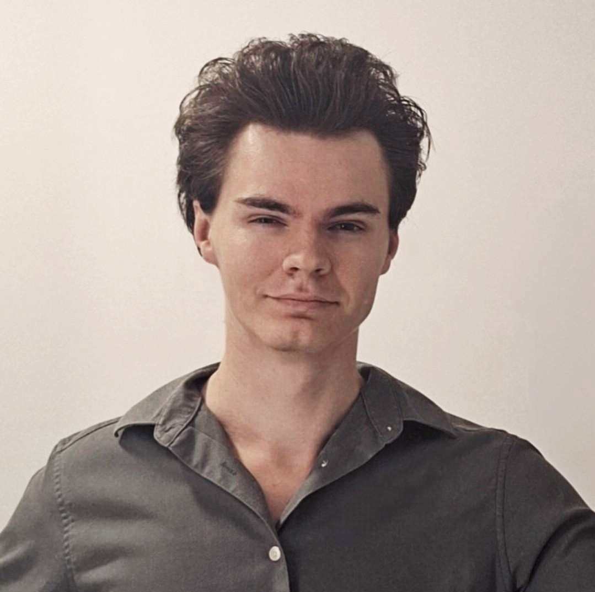

Profesor și psiholog clinician
Fie că lucrăm pentru echilibrul tău sau pentru examene, adaptăm fiecare sesiune astfel încât să primești sprijinul exact acolo unde ai nevoie.
Consiliere psihologică, evaluare și sprijin în gestionarea dificultăților personale sau profesionale
Pregătire la istorie pentru elevi, într-un mod clar, structurat și potrivit nivelului fiecăruia
Viziunea mea este modelată de o experiență hibridă, la intersecția dintre studiul minții și cel al istoriei. După ce am absolvit Istoria în 2020 și Psihologia în 2023 la Universitatea din București, am ales să aprofundez studiile prin programe de master în istoria mentalităților și în psihologie clinică.
Această dublă specializare este completată de activitatea mea de profesor de istorie, un rol care mi-a șlefuit capacitatea de a asculta activ și de a structura informația pe înțelesul tuturor. Experiența de la catedră mă ajută astăzi, în cabinet, să traduc conceptele psihologice complexe în soluții clare și să fiu atent la nevoile unice ale fiecărei persoane.